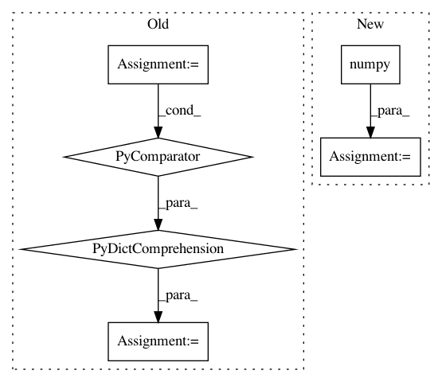

5cee6d046afc3d3b9a3d14cde7dfb85c9ff1fbdc,opennmt/training.py,Trainer,_get_words_counters,#Trainer#,135
Before Change
Returns:
A dictionary mapping a counter name to a Python value.
counters = {name:value.numpy() for name, value in self._words_counters.items()}
self._reset_words_counters()
return counters
def _reset_words_counters(self):
After Change
counters = {}
for name, counter in self._words_counters.items():
counters[name] = self._all_reduce_sum(counter).numpy()
counter.assign(tf.constant(0, dtype=tf.int64))
return counters
def _all_reduce_sum(self, value):
In pattern: SUPERPATTERN
Frequency: 3
Non-data size: 6
Instances
Project Name: OpenNMT/OpenNMT-tf
Commit Name: 5cee6d046afc3d3b9a3d14cde7dfb85c9ff1fbdc
Time: 2020-03-30
Author: guillaumekln@users.noreply.github.com
File Name: opennmt/training.py
Class Name: Trainer
Method Name: _get_words_counters
Project Name: interactiveaudiolab/nussl
Commit Name: dc3462d4f4fe48bc075b48815d026dc4a8acceb7
Time: 2019-07-19
Author: prem@u.northwestern.edu
File Name: nussl/separation/clustering/clustering_algorithms.py
Class Name: DeepClustering
Method Name: extract_features
Project Name: onnx/onnx-tensorflow
Commit Name: 054095d922edda5134e520522bc82a1b95cc5bd4
Time: 2020-09-09
Author: smonov@gmail.com
File Name: onnx_tf/backend_rep.py
Class Name: TensorflowRep
Method Name: run